이 페이지는 쿠팡 파트너스 활동의 일환으로, 이에 따른 일정액의 수수료를 제공받습니다.
육아템 정리노트
@yuga.pick · 육아템 (0~5세 육아용품·소모품·놀이)
유튜브·블로그에서 본 비교를 모아 뒀어요. 가격·재고는 판매처에서 다시 확인해 주세요.
💸 오늘의 토스 특가 가격·재고는 토스에서 다시 확인해 주세요
이 포스팅은 토스쇼핑 쉐어링크 활동의 일환으로, 이에 따른 일정액의 수수료를 제공받습니다.
맘스럽 아토클래식 물티슈, 100매입, 20팩
11,800원 (1매당 약 6원(2,000매)) · ★ 4.6 (19,673) · 확인 시각 10-25 11:05
토스쇼핑에서 보기 (광고)블루나 본 물티슈 오리지널, 50gsm, 100매, 10팩
9,990원 (1매당 10원) · ★ 4.7 (23,084) · 확인 시각 10-25 11:05
토스쇼핑에서 보기 (광고)베베앙 시그니처 물티슈 캡형, 100매, 20팩
22,800원 (1매당 약 11원) · ★ 4.8 (911) · 확인 시각 10-25 11:05
토스쇼핑에서 보기 (광고)30일 내 최저가
숨 시그니처 물티슈, 63gsm, 70매, 10팩
8,490원 (1매당 약 12원(700매)) · ★ 4.7 (1,833) · 확인 시각 10-25 11:05
토스쇼핑에서 보기 (광고)🔎 사기 전 비교 유튜브 비교 영상에서 오셨다면 여기
숨 시그니처 물티슈 토스 8,490원 vs 쿠팡 12,130원
- 숨 시그니처 물티슈 63g 70매 10팩은 같은 구성이 쿠팡 12,130원, 토스쇼핑 8,490원이라 1매 약 12원으로 셋 중 가장 쌌어요.
- 리벤스 시그니처 블랙라벨 70g은 1매 약 17원으로 더 두꺼운 편이지만, 별점 1~3점 상품평 20개 중 14개가 여러 장이 딸려 나온다는 불만이었어요.
- 리벤스 시그니처 블루 75g은 가장 두꺼운 대신 1매 약 19원이고, 같은 '딸려 나옴' 불만이 20개 중 10개였어요.
젖병세척솔 추천 비교
- 젖병과 젖꼭지를 한 번에 해결하려면 베베그로우 젖병 세척솔 + 젖꼭지 세척솔 세트(8,600원).
- 젖꼭지 안쪽·빨대 부품 같은 좁은 곳을 따로 닦으려면 하이비 몽글이 롱 미니솔 5p(14,900원).
- 열탕 소독과 물기 마름이 신경 쓰이면 마더케이 실리콘 젖병 브러쉬 2종 세트(8,900원).
아기물티슈 추천 비교
- 맘스럽 아토클래식은 1매당 6원으로 가장 싸지만 얇다는 상품평이 많아 청소·식탁처럼 막 쓰는 집에 맞아요.
- 베베앙 시그니처는 1매당 12원으로 비싼 대신 도톰하다는 상품평이 많아 아이 손·입을 닦는 집에 맞아요.
- 블루나 본은 1매당 10원으로 가격과 두께 사이에서 고르는 집에 맞고, 토스쇼핑 가격은 맘스럽만 쿠팡보다 눈에 띄게 쌌어요.
트라이크 추천 비교
- 아이가 타다가 잘 때가 많다면 등받이와 벨트가 있는 쿨키즈 F1(5점식)이나 베이블퓨어리 T2(3점식)입니다.
- 다섯 살 넘은 큰 아이가 잠깐씩 타는 용도라면 에이블 에어입니다. 등받이와 벨트는 없고, 접은 크기 합이 131cm입니다.
- 가장 가볍고 작게 접히는 건 베이비루나 TS580(2.9kg, 세 변 합 106cm)입니다. 다만 2026년 6월 출시라 상품평이 적습니다.
휴대용 유모차 추천 비교
- 항공사 기준(세 변 합 115cm 이하)에 맞는 건 접은 크기 114cm인 스토케 요요3, 115cm인 리안 플라이입니다.
- 10만 원 안팎으로 가볍게 쓰려면 조이로 JR2(99,900원), 서스펜션이 필요하면 JR5(139,000원). 단 JR5는 접은 크기 합이 141cm입니다.
- 신생아부터 바로 쓰려면 조이로 JR2·JR5나 리안 플라이(요요3 6+는 6개월부터, 신생아팩 별도)입니다.
스쿳앤라이드 킥1 푸시앤고 vs 킥3S vs 킥5
- 걷기 시작했고 키 82cm 이상이면 붕붕카↔킥보드로 바뀌는 킥1 푸시앤고(82~118cm, 부모용 손잡이).
- 키 96cm 이상이고 서서만 탈 거면 킥보드 전용 킥3S(96~130cm, 핸들 4단, LED 바퀴, 139,000원).
- 키 118cm 이상이거나 오래 쓸 거면 킥5(118~180cm, 80kg, 핸들 60~90cm).
비교 글 전체
🎬 영상 속 준비물 쇼츠에서 보고 오셨다면 여기
새벽 수유 때 손수건 어딨지
아기 서랍 정리함
쿠팡에서 아기 서랍 정리함 보기 (광고)출산가방에서 제일 많이 쓰는 것
출산준비물
쿠팡에서 출산준비물 보기 (광고)기저귀 특가인 줄 알았는데
기저귀
쿠팡에서 기저귀 보기 (광고)번호별 추천
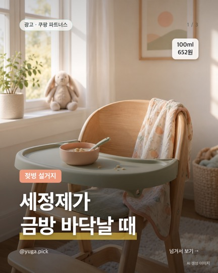
세정제가 금방 바닥날 때
- 액상형 600ml 용기 · 3,910원 · 652원
- 액상형 리필 500ml×3 · 8,460원 · 564원
- 거품형 550ml · 6,200원 · 1,127원
비앤비 액상형 젖병세정제 허브그린향 600ml
쿠팡에서 가격·후기 보기 (광고)원문 글 보기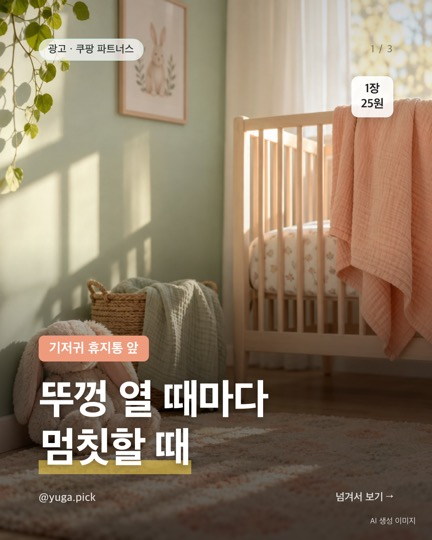
뚜껑 열 때마다 멈칫할 때
- 탐사 · 5,000원 · 1장 25원
- 프로그 · 5,560원 · 1장 약 28원
- 탐사 한 장 3L
- 베이비파우더향
탐사 향기나는 기저귀 쓰레기봉투 베이비파우더향 100p 2개
쿠팡에서 가격·후기 보기 (광고)원문 글 보기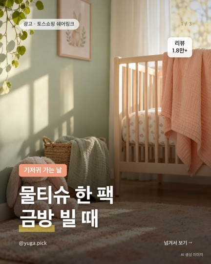
물티슈 한 팩 금방 빌 때
- 100매 × 20팩
- 2,000매 18,800원
- 1매 약 10원
- 평점 4.6 (18,625)
맘스럽 아토클래식 물티슈 100매 20팩
토스쇼핑에서 가격·후기 보기 (광고)원문 글 보기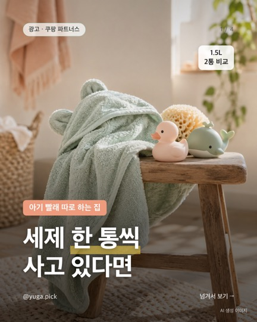
세제 한 통씩 사고 있다면
- 1통 100ml 542원
- 2통 100ml 479원
- 드럼·일반 겸용 표기
- 제조일 2025-06-24 표기
퍼실 딥클린 엑스퍼트 베이비젤 액체세제 1.5L 2개
쿠팡에서 가격·후기 보기 (광고)원문 글 보기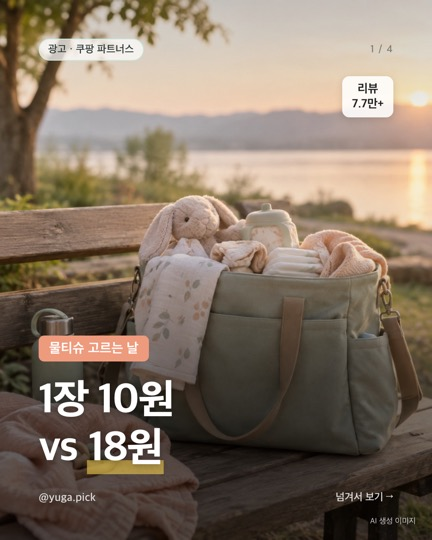
1장 10원 vs 18원
- 50g·120매 → 1장 10원
- 75g·70매 → 1장 18원
- g 클수록 원단 무거움
- 10개 묶음 표시가 기준
베베앙 120 유아물티슈 캡형 50g 120매 10개
쿠팡에서 가격·후기 보기 (광고)원문 글 보기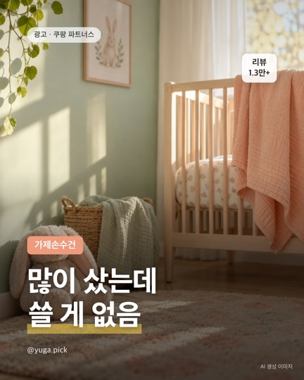
많이 샀는데 쓸 게 없음
- 가제손수건 분명 많이 샀는데 막상 쓰려면 한 장도 없는 거 국룰임?ㅋㅋ
- 침 닦고 수유하고 목욕 뒤까지 쓰다 보면 빨래통에 다 가 있음
- 아바드 캐릭터 코튼 가제손수건 K형은 36×36cm 20장에 11,800원, 1장에 590원꼴
- 10/6 19시 확인 기준(바뀔 수 있어요)
아바드 캐릭터 코튼 가제손수건 K형 20개입 세트
쿠팡에서 가격·후기 보기 (광고)원문 글 보기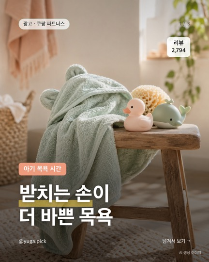
받치는 손이 더 바쁜 목욕
- 첫 페이지 10개 중
- 손목·한 손 8건
- 몸 받쳐 줌 6건
- 배수·물 빼기 7건
슈너글 아기욕조
쿠팡에서 가격·후기 보기 (광고)원문 글 보기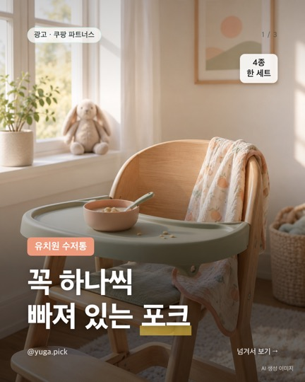
꼭 하나씩 빠져 있는 포크
- 첫 페이지 10개 중
- 유치원·어린이집 10건
- 세척 얘기 9건
- 4~5살 언급 3건
에디슨 2단계 스텐 젓가락 스푼 포크 케이스 세트
쿠팡에서 가격·후기 보기 (광고)원문 글 보기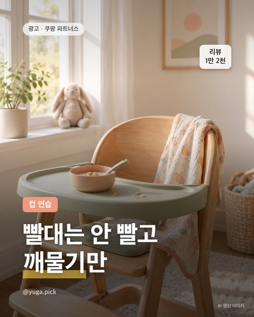
빨대는 안 빨고 깨물기만
- 빨대컵 연습 시작했는데 빨대는 안 빨고 깨물기만 하는 거 국룰임?ㅋㅋ
- 처음엔 컵 하나로 끝내기보다 아기한테 맞는 단계부터 보는 집 많음
- 릿첼 AQ 첫걸음 머그 스텝업 빨대컵 세트 150ml
- 상품 페이지 표기: 최소 6개월 · PP 소재
릿첼 AQ 첫걸음 머그 스텝업 빨대컵 세트 150ml
쿠팡에서 가격·후기 보기 (광고)원문 글 보기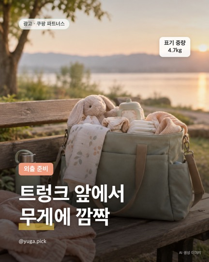
트렁크 앞에서 무게에 깜짝
- 유모차 트렁크에 넣다가 무게 때문에 허리 삐끗할 뻔한 순간, 다들 알지?ㅋㅋ
- 외출용 휴대 유모차는 무게랑 기내반입부터 보는 집 많음
- 조이로 JR2 휴대용 접이식 유모차
- 상품 페이지 표기: 중량 4.7kg · 최대 15kg · 기내반입 가능
조이로 JR2 휴대용 초경량 기내반입 접이식 유모차
쿠팡에서 가격·후기 보기 (광고)원문 글 보기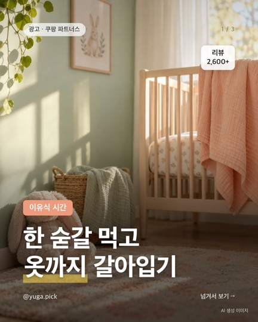
한 숟갈 먹고 옷까지 갈아입기
- 첫 페이지 10개 중
- '이유식' 언급 10건
- '세척·씻기' 언급 8건
- '딱딱·뻣뻣' 비교 3건
무쉬 아기 실리콘 방수 턱받이 A타입 1개
쿠팡에서 가격·후기 보기 (광고)원문 글 보기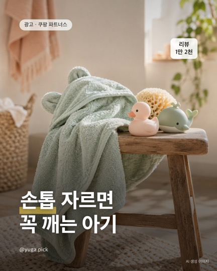
손톱 자르면 꼭 깨는 아기
- 아기 손톱 자르려고 하면 꼭 그때 깨서 손 휘젓는 거 국룰임?ㅋㅋ
- 그래서 다들 자는 동안 몰래 깎더라
- 마더케이 영유아 핀셋 네일케어 4종 세트
- 14,500원(10/3 확인, 바뀔 수 있어요)
마더케이 영유아 핀셋 네일케어 4종 세트
쿠팡에서 가격·후기 보기 (광고)원문 글 보기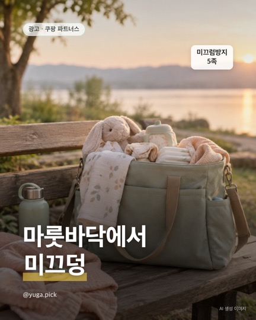
마룻바닥에서 미끄덩
- 마룻바닥에서 아기가 미끄덩해서 심장 철렁한 사람 손✋
- 양말만 신겨도 덜 미끄러진다는 집 많더라
- 비바세븐 아동용 미끄럼방지 중목 양말 5족
- 10,490원(10/3 확인, 바뀔 수 있어요)
비바세븐 아동용 위시 미끄럼방지 중목 양말 5족
쿠팡에서 가격·후기 보기 (광고)원문 글 보기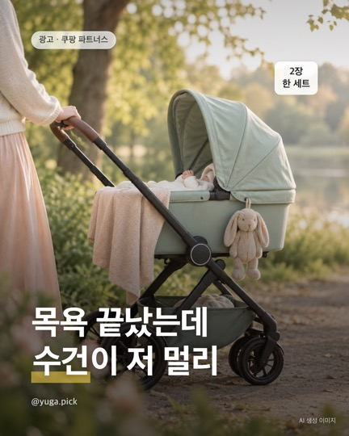
목욕 끝났는데 수건이 저 멀리
- 목욕 끝나고 아기 들어 올렸는데 수건이 저 멀리 있는 거 국룰임?ㅋㅋ
- 날 추워지면 이 몇 초가 제일 급함
- 리틀그립 아기 후드타올 2개 세트
- 10,440원, 한 장에 5,220원꼴(10/3 확인, 바뀔 수 있어요)
리틀그립 아기 후드타올 2개 세트
쿠팡에서 가격·후기 보기 (광고)원문 글 보기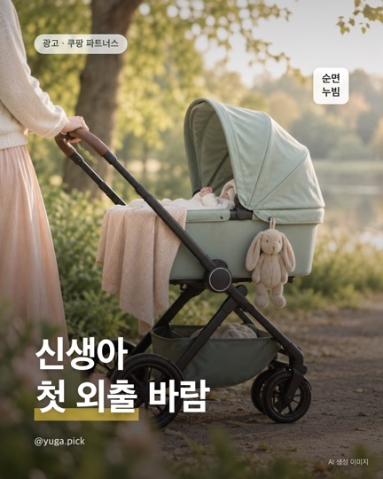
신생아 첫 외출 바람
- 신생아 데리고 첫 외출하는데 바람 불어서 꽁꽁 싸매게 되는 사람 손✋
- 이 시기 출산이면 겉싸개 두께 고민 꼭 함
- 아이레빗 신생아 순면 곰 누빔 겉싸개
- 23,900원(10/3 확인, 바뀔 수 있어요)
아이레빗 신생아 순면 곰 누빔 겉싸개
쿠팡에서 가격·후기 보기 (광고)원문 글 보기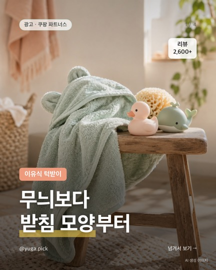
무늬보다 받침 모양부터
- 받침이 벌어지는지
- 숙여도 버티는지
- 물로 헹궈 끝나는지
- 옵션 타입 이름 확인
무쉬 실리콘 방수 턱받이 A타입 1개
쿠팡에서 가격·후기 보기 (광고)원문 글 보기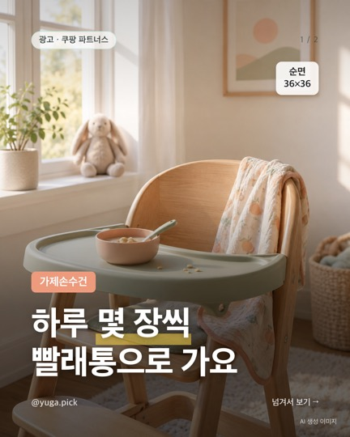
하루 몇 장씩 빨래통으로 가요
- 재질 순면 표기 · 36×36cm
- 10장 묶음
- 상품평 9,871개
- 판매자 배송비 따로 확인
오즈맘 유아동용 가제손수건 10p
쿠팡에서 가격·후기 보기 (광고)원문 글 보기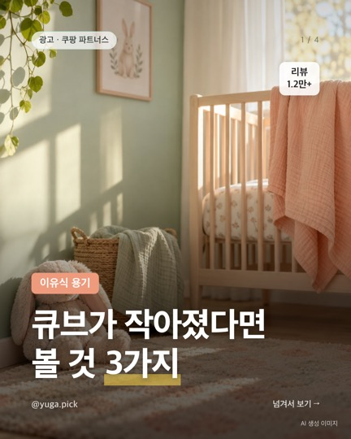
큐브가 작아졌다면 볼 것 3가지
- 실제 담기는 용량
- 데우기·냉동 표기
- 한 손에 드는 무게
락앤락 바로한끼 이유식 원형 보관용기 230ml 3개
쿠팡에서 가격·후기 보기 (광고)원문 글 보기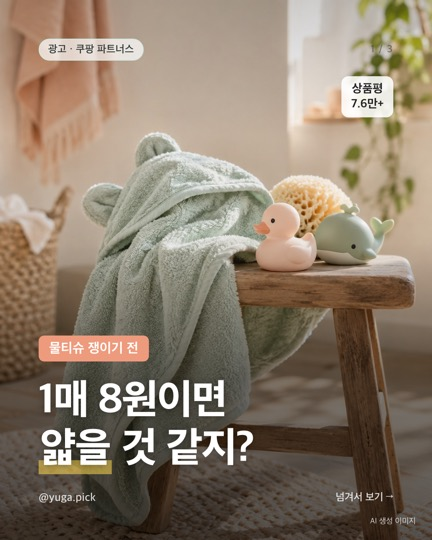
1매 8원이면 얇을 것 같지?
- 보통이에요 31
- 두꺼워요 13
- 얇아요 1
- '정말 촉촉해요' 29
베베앙 120 유아물티슈 캡형, 50g, 120매, 10개
쿠팡에서 가격·후기 보기 (광고)원문 글 보기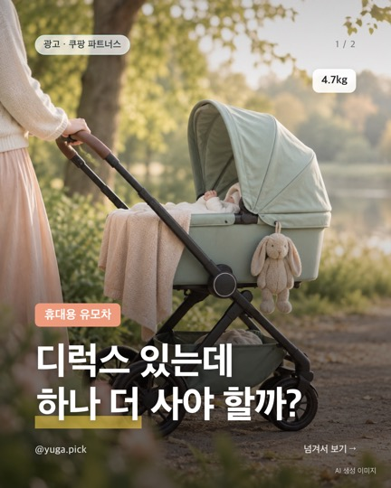
디럭스 있는데 하나 더 사야 할까?
- 중량 4.7kg · 최대 15kg
- 기내반입 가능 표기
- 상품평 310개 · 판매자 쿠팡(주)
- KC 인증 표기
조이로 JR2 휴대용 초경량 기내반입 접이식 유모차
쿠팡에서 가격·후기 보기 (광고)원문 글 보기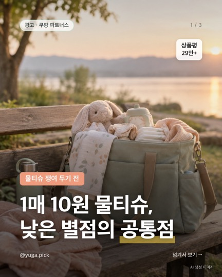
1매 10원 물티슈, 낮은 별점의 공통점
- 얇다·얇아졌다 13건
- 예전과 달라졌다 11건
- 건조하다 8건
- 55g · 100매 × 10팩
코멧 시그니처 아기물티슈 엠보싱 캡형 55g 100매 × 10팩
쿠팡에서 가격·후기 보기 (광고)원문 글 보기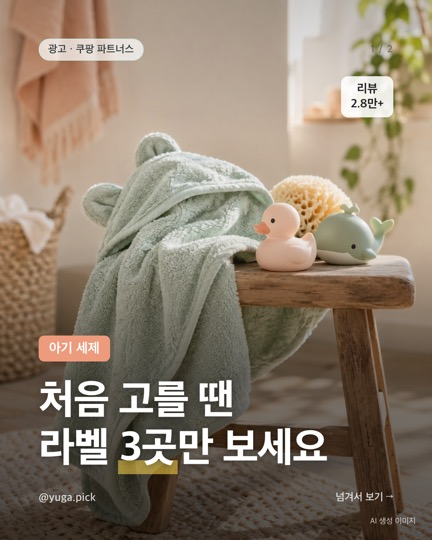
처음 고를 땐 라벨 3곳만 보세요
- 제형·용도: 액상 / 섬유용
- 향: 유향 / 무향
- 100ml당 가격으로 비교
- 리필형은 본통 따로 필요
네이쳐러브메레 유아 오리지널 세제 리필형 허브가든향 1.3L, 2개
쿠팡에서 가격·후기 보기 (광고)원문 글 보기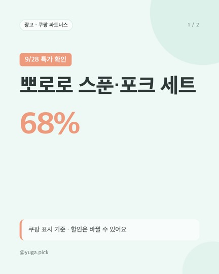
뽀로로 스푼·포크 세트
- 구성: 스푼 + 포크 + 케이스
- 재질: 스테인리스 · 혼합색상
- 상품평 2,004개
- 크기·월령은 상세 설명에서 확인
릴팡 뽀로로잡스 입체 편한 어린이 스푼 + 포크 + 케이스 세트 PR5980
쿠팡에서 가격·후기 보기 (광고)원문 글 보기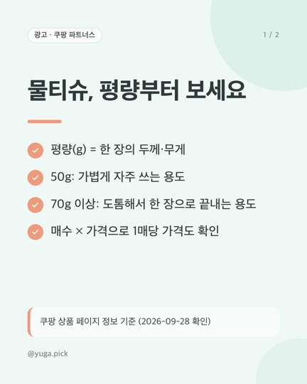
물티슈, 평량부터 보세요
- 평량(g) = 한 장의 두께·무게
- 50g: 가볍게 자주 쓰는 용도
- 70g 이상: 도톰해서 한 장으로 끝내는 용도
- 매수 × 가격으로 1매당 가격도 확인
베베숲 오리진 유아물티슈 캡형 50g 100매 10개
쿠팡에서 가격·후기 보기 (광고)원문 글 보기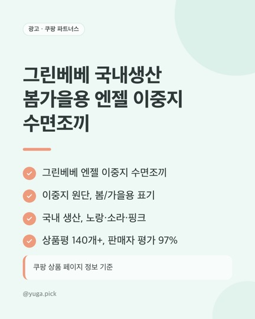
그린베베 국내생산 봄가을용 엔젤 이중지 수면조끼
- 새벽마다 이불 걷어찬 아기 다시 덮어주느라 깨는 시기, 있죠.
- 그래서 이불 대신 '입히는 이불', 수면조끼를 찾는 분이 많아요.
- 봄가을용으로 하나 정리해 둘게요.
- · 그린베베 엔젤 이중지 수면조끼
그린베베 국내생산 봄가을용 엔젤 이중지 수면조끼
쿠팡에서 가격·후기 보기 (광고)원문 글 보기